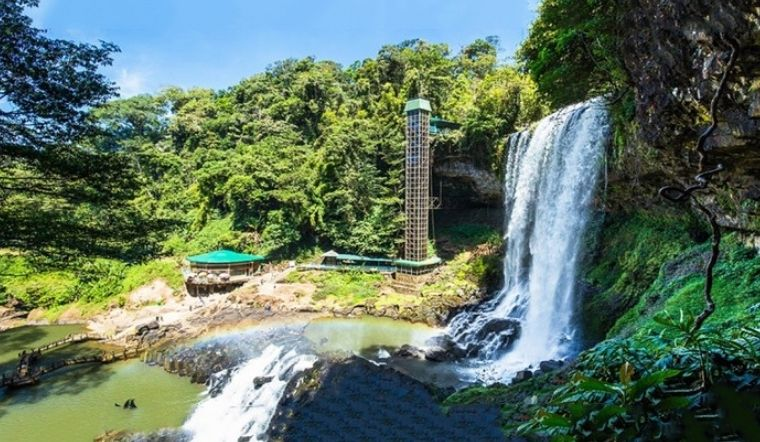

Tour Bảo Lộc
Du lịch Bảo Lộc
Nơi còn lưu giữ nguyên vẹn nét đẹp hùng vĩ của Tây Nguyên đại ngàn, hòa trong không khí mát mẻ, se se lạnh kết hợp cùng trung tâm nghỉ dưỡng tạo nên những giá trị nghĩ dưỡng khó quên. Khám phá một viên ngọc thô chưa có sự can thiệp bởi bàn tay con người với hệ thống sông, suối, núi rừng, điểm tham quan mang trong mình nét đẹp hoang sơ, ẩn mình nhưng không kém phần uy nghi, tráng lệ.
Những địa điểm du lịch theo Tour Bảo Lộc của Tam Tai
1. Thác Đambri – Ngọn thác nổi tiếng nhất khu vực Tây Nguyên
- Địa chỉ: Thôn 14 Lý Thái Tổ, Đam Bri, Bảo Lộc, Lâm Đồng
Đambri là ngọn thác cao nhất và hùng vĩ bậc nhất tại Lâm Đồng, du khách sẽ có những trải nghiệm tuyệt vời khi được chiêm ngưỡng cảnh sắc tuyệt trần mà mẹ thiên nhiên ban tặng, được tận hưởng một không gian xanh cực trong lành và tham gia những hoạt động dã ngoại đầy thú vị.
Tour này có gì hay:
- Khởi hành: các ngày trong tuần
- Đạp vịt, cưỡi voi, vui chơi tại hồ trượt nước là những trải nghiệm để giải trí, thư giãn
- Vượt qua 138 bậc thang dựa trên vách đá cheo veo sẽ lên được đỉnh của ngọn thác
- Khám phá cuộc sống người Châu Mạ: hòa mình vào những lễ hội nổi tiếng của người đồng bào Châu Mạ.
- Ngắm cảnh quan hùng vĩ của thác Dambri...

2. Đồi chè Tâm Châu – Là thiên đường nghỉ dưỡng tuyệt vời để thư giãn và nạp nguồn năng lượng mới dồi dào
- Địa chỉ: Lộc Tân, Bảo Lâm, Lâm Đồng
Đồi Chè Tâm Châu được thiên nhiên ưu ái cho khí hậu quanh năm mát mẻ với nhiệt đô trung bình 15°C. Đây là một điểm tham quan mát mẻ quanh năm, không nóng nực như Sài Gòn và các thành phố miền trung khác. Đồi chè được bao phủ bởi sắc màu xanh lá bạt ngàn của đồi núi trập trùng. Đồi chè còn là quê hương của bốn loại chè cao cấp khác
Tour này có gì hay:
- Khởi hành: thứ 4 hàng tuần
- Tham quan nhà máy sản xuất trà và đồi chè Tâm Châu. - Dừng chân tại Tà Đùng top view homestay hay còn gọi là “nhà Chú Đông”
- Tham quan Chùa Pháp Hoa, ngôi chùa hơn 60 năm tuổi, nằm trên ngọn đồi cao tọa lạc ngay trung tâm thị xã
3. Chùa Linh Quy pháp ấn - Là bức tranh sơn thủy tuyệt đẹp
- Địa chỉ: Lộc Thanh, Bảo Lâm, Lâm Đồng
Đây là một địa điểm chụp ảnh lý tưởng, đến đây không chỉ được ngoạn cảnh mà bạn có thể lưu lại những bức ảnh vô cùng “chất”. Nhiều khách du lịch chiêm ngưỡng cảnh vật qua những bức ảnh mà phải thốt lên “đây là cảnh ở Việt Nam sao, thật không thể tin”. Vì vậy địa điểm này thu hút rất nhiều bạn trẻ cũng như khách du lịch cả nước.
Tour này có gì hay:
- Khởi hành: thứ 3 hàng tuần
- Được hòa mình vào thiên nhiên núi rừng
- Tản bộ một vòng xung quanh để khám hết vẻ đẹp hoang sơ núi rừng
- Là nơi săn mây lý tưởng bật nhất
4. Tu viện Bát Nhã - Tiểu cảnh thiên nhiên
- Địa chỉ: Thôn 10, xã Damb’ri, thị xã Bảo Lộc, tỉnh Lâm Đồng
Tu viện Bát Nhã Bảo Lộc được bao phủ bởi cảnh quan thiên nhiên đẹp tuyệt mỹ, xung quanh là những đồi chè xanh mướt cùng ba thác nước uốn lượn chảy quanh tu viện. Tu viện Bát Nhã Bảo Lộc từ lâu đã trở thành điểm đến nổi tiếng được nhiều Phật tử lẫn mọi người từ khắp nơi yêu thích
Tour này có gì hay:
- Khởi hành: thứ 2 hàng tuần
- Khám phá kiến trúc nơi đây mang đậm phong cách Á Đông tạo nên vẻ đẹp vừa cổ kính, vừa đậm đà bản sắc dân tộc.
- Ngắm nhìn vẻ đẹp thơ mộng, trữ tình của hồ nước trong xanh hay thác nước nhân tạo được đặt ngay trung tâm của Thiền Viện
- Khung cảnh nên thơ giúp tâm hồn được an yên, mọi mệt mỏi, buồn phiền cứ thế tan biến.
5. Tuyệt tình cốc - Cảnh sắc hữu tình, tựa như chốn mê cung, huyền ảo
- Địa chỉ: xã Lộc Tân, huyện Bảo Lâm, Thành phố Bảo Lộc
Nơi đây sở hữu cảnh sắc thiên nhiên đầy hữu với hồ nước xanh trong lành. Khiến nhiều lữ khách dừng chân như bị mê hồn trước vẻ đẹp này. Chính vì vậy mà địa điểm này đã được giới trẻ đặt cho biệt danh là “Tuyệt Tình Cốc” phiên bản Việt. Khi đến đây bạn sẽ cảm nhận rõ ràng nhất nét hoang sơ, chân thực nhất của thiên nhiên. Tuyệt Tình Cốc Bảo Lộc được hình thành từ thiên nhiên, không trải qua bất kỳ khai thác nào từ con người.
Tour này có gì hay:
- Khởi hành: thứ 7 hàng tuần
- Với một hồ nước xanh biếc đầy mê hoặc cùng bao quanh là bãi đá thiên nhiên khổng lồ tạo nên một chốn bồng lai tiên cảnh có một không hai để du khách có thể checkin
- Khung cảnh thiên nhiên kỳ vĩ đầy sự huyền bí và quyến rũ để du khách chiêm ngưỡng
Tam tai Tour
Công ty TNHH du lịch Đà Lạt Tam Tai
THÔNG TIN LIÊN HỆ:
Địa chỉ: 106A Đại lộ 3 Phước Bình, Phước Long B, TP Thủ Đức
Điện thoại: 0377451647
Hotline: 1333 456 678
Email: Tamtai.tour@gmail.com
Website: Tamtaitour.com